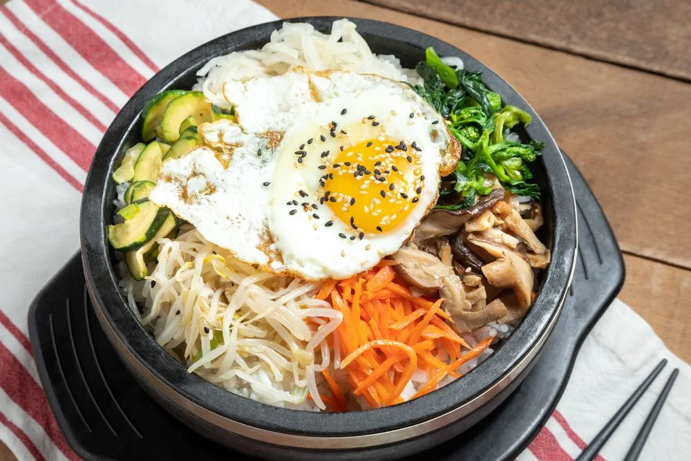
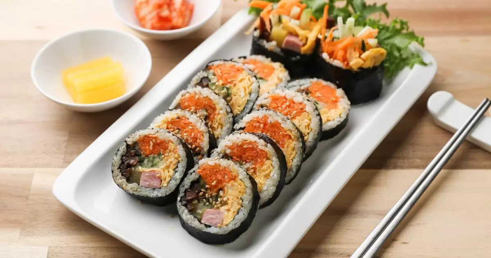
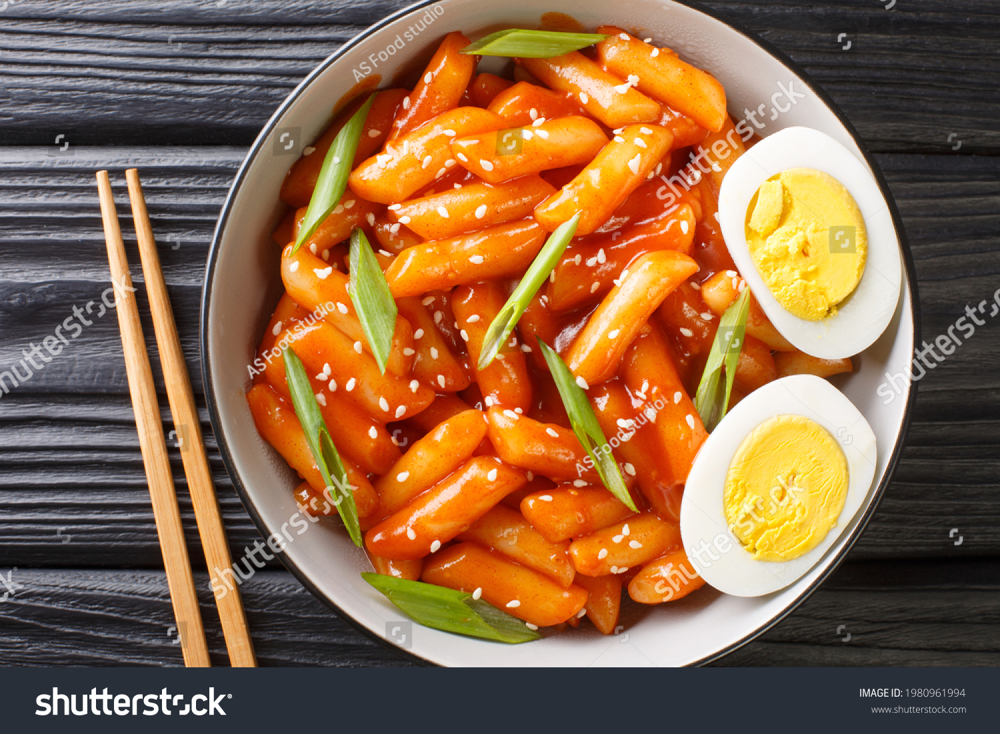

Veja os pratos mais famosos:

Kimchi
O kimchi é uma conserva de hortaliças com um molho vermelho bem apimentado. A receita oriental é feita a partir de acelga, nabo e pimenta que, após horas em salmoura, são envolvidos em uma pasta feita com farinha de arroz, açúcar e vários temperos.

Bibimbap
A versão coreana do nosso arroz de forno, só que sem ir ao forno! Ele leva legumes, vegetais e carnes que são preparados separadamente e colocados com o arroz.

Kimbap
Conhecido como “sushi coreano”, é sim um rolo de alga e arroz, mas o que diferencia é o recheio e o tempero, podendo ser de diversas formas, como vegetais, ovos, presunto, salsicha, carne de boi, e até kimchi.

Tteokbokki
Na prática, consiste em uma massa de arroz frita servida em molho. Normalmente, seu molho é vermelho e apimentado.